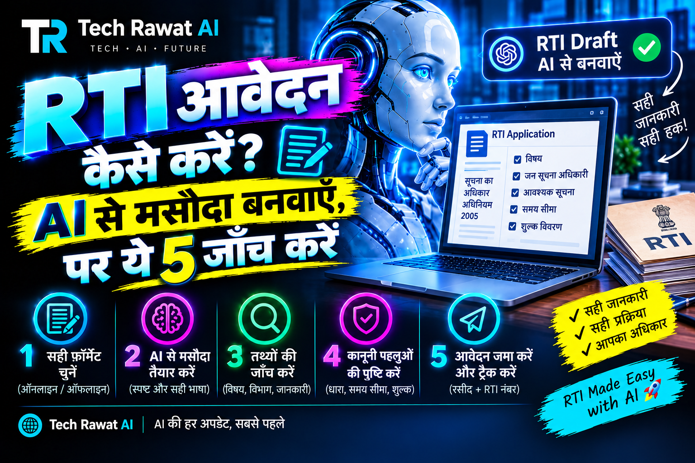

RTI आवेदन कैसे करें? AI से मसौदा बनवाएँ, पर ये 5 जाँच करें

RTI आवेदन कैसे करें? पहले तय करें कि आपकी जानकारी केंद्र सरकार के किस विभाग के पास है या राज्य के, फिर सवालों की सूची बनाकर AI से मसौदा लिखवाएँ। केंद्र के विभागों के लिए RTI ऑनलाइन पोर्टल (rtionline.gov.in) पर 10 रुपये शुल्क लगता है। AI का मसौदा भेजने से पहले उसकी पाँच जाँच ख़ुद करें।
मसौदा लिखने में AI सहारा दे सकता है: वह सवालों को साफ़ और क्रम से लिखवा सकता है। पर पोर्टल की शर्तें, शुल्क और विभाग का चुनाव उसका काम नहीं है। यह लेख क़ानूनी सलाह नहीं है, सिर्फ़ मसौदा बनाने और उसे जाँचने का तरीका है।
पहले तय करें: केंद्र का विभाग या राज्य का
RTI ऑनलाइन पोर्टल के अपने FAQ के अनुसार वह सिर्फ़ केंद्र सरकार के मंत्रालयों, विभागों और दूसरे केंद्रीय लोक प्राधिकरणों के लिए है। राज्य सरकार के किसी विभाग के लिए इस पोर्टल पर आवेदन किया जाए तो वह बिना शुल्क वापसी के लौटा दिया जाता है। राज्य के लिए उस राज्य का अपना RTI पोर्टल या डाक का रास्ता देखना होगा।
अगर आपका असल मक़सद किसी योजना का लाभ जानना है, तो पहले देखें कि वह जानकारी योजना खोजने वाले सरकारी पोर्टल पर मिल जाती है या नहीं; myScheme से सही योजना खोजने का तरीका एक अलग लेख में है। RTI तब काम की है जब दस्तावेज़ या रिकॉर्ड चाहिए।
AI से मसौदा कैसे बनवाएँ
AI को सिर्फ़ विषय बताएँ, अपनी पहचान नहीं। इसके लिए नीचे जैसा प्रॉम्प्ट काफ़ी है:
मुझे [विभाग का नाम] से सूचना का अधिकार अधिनियम, 2005 के तहत जानकारी माँगनी है। विषय: [किस काम या फ़ाइल के बारे में] और समय: [किस महीने से किस महीने तक]। 4 सवाल बनाओ, हर सवाल में किसी दस्तावेज़, रजिस्टर, आदेश या पत्राचार की प्रति माँगो। राय, अनुमान या "क्यों" वाले सवाल न रखो। भाषा सरल हिंदी रखो।
RTI Wiki के अनुसार RTI में दस्तावेज़, फ़ाइल नोटिंग, ईमेल और बैठक के ब्योरे माँगे जा सकते हैं, पर व्यक्तिगत राय, भविष्य की योजना और काल्पनिक सवाल नहीं। इसी वजह से प्रॉम्प्ट में दस्तावेज़ की प्रति माँगने को कहा गया है।
अपना नाम, पता, फ़ोन, आधार या खाता संख्या प्रॉम्प्ट में न डालें। वे आप फ़ॉर्म में अलग से भरेंगे। क्या नहीं बताना चाहिए, इसकी सूची AI को कभी न बताएँ ये 6 चीज़ें में है।
AI के मसौदे की 5 जाँच
- सही विभाग: मसौदा जिस विभाग को संबोधित है, वही जानकारी रखता है या नहीं, और वह केंद्र का है या राज्य का।
- सवाल दस्तावेज़ माँगें: "क्यों" और "आपकी राय" वाले सवाल हटाकर "किस आदेश की प्रति" जैसे सवाल रखें।
- गढ़ी हुई बातें: AI ने कोई धारा, नियम या आदेश संख्या लिखी हो तो उसे आधिकारिक स्रोत से मिलाएँ, वरना हटा दें।
- निजी जानकारी: मसौदे में आपका पता, फ़ोन या पहचान संख्या अनचाहे जुड़ी तो नहीं।
- लंबाई और भाषा: पोर्टल का टेक्स्ट बॉक्स 3000 अक्षर तक सीमित है, इसलिए मसौदा छोटा रखें।
तीसरी जाँच सबसे ज़रूरी है, क्योंकि AI धाराएँ और नियम आत्मविश्वास से ग़लत लिख सकता है। ऐसी ग़लती पकड़ने का तरीका AI के ग़लत जवाब पकड़ने के क़दम में है।
ऑनलाइन भरते समय पोर्टल की शर्तें
नीचे की बातें RTI ऑनलाइन पोर्टल के FAQ और दिशानिर्देश से ली गई हैं और 27 अक्टूबर 2026 को देखी गई हैं। शुल्क या पोर्टल के नियम बदल सकते हैं, इसलिए आवेदन से पहले पोर्टल का दिशानिर्देश पन्ना एक बार पढ़ लें।
| बात | पोर्टल के अनुसार |
|---|---|
| किसके लिए | केंद्र सरकार के मंत्रालय, विभाग और केंद्रीय लोक प्राधिकरण; राज्य के विभाग के लिए नहीं |
| शुल्क | 10 रुपये; गरीबी रेखा से नीचे (BPL) के आवेदक को शुल्क नहीं, पर सरकार का प्रमाणपत्र लगाना होगा |
| भुगतान | इंटरनेट बैंकिंग, कार्ड या UPI |
| टेक्स्ट की सीमा | बॉक्स में 3000 अक्षर तक; इससे लंबा हो तो PDF बनाकर सहायक दस्तावेज़ में जोड़ें |
| अपलोड | आधार, PAN या दूसरी पहचान न डालें (BPL प्रमाणपत्र को छोड़कर) |
| रसीद | जमा करने पर रजिस्ट्रेशन नंबर मिलता है; उसे संभालकर रखें |
हिंदी में लिखने वालों के लिए एक बात देखने लायक है। दिशानिर्देश के अनुसार टेक्स्ट बॉक्स में सिर्फ़ अंग्रेज़ी अक्षर, अंक और कुछ चिह्न चलते हैं। इसलिए हिंदी का मसौदा बॉक्स में चिपकाने से पहले पोर्टल पर ख़ुद जाँच लें कि वह चल रहा है या नहीं। अंग्रेज़ी अनुवाद की ज़रूरत पड़े तो उसे भाषिणी ऐप से अनुवाद जाँचने का तरीका काम आएगा, और अनुवाद के बाद सवाल का मतलब वही बना है या नहीं, यह ख़ुद पढ़कर देखें।
जवाब न मिले तो
पोर्टल के FAQ के अनुसार पहली अपील के लिए "Submit First Appeal" चुना जाता है और उसमें मूल आवेदन का रजिस्ट्रेशन नंबर और ईमेल लगता है। RTI अधिनियम के अनुसार पहली अपील का कोई शुल्क नहीं है। अगर CPIO ने जवाब नहीं दिया और 30 दिन पूरे नहीं हुए हैं, तो पोर्टल पहली अपील लेता ही नहीं; उसके लिए 30 दिन पूरे होने का इंतज़ार करना होगा। जवाब में अतिरिक्त शुल्क माँगा जाए तो वह "View Status" में दिखता है।
पहला आवेदन: अगला क़दम
पहले विभाग और उसके केंद्र या राज्य के होने की पुष्टि करें, फिर 3 से 4 दस्तावेज़ वाले सवाल लिखें और AI से मसौदा बनवाएँ। इसके बाद ऊपर की पाँच जाँच करें, पोर्टल का दिशानिर्देश पन्ना पढ़ें और रजिस्ट्रेशन नंबर सहेज लें।